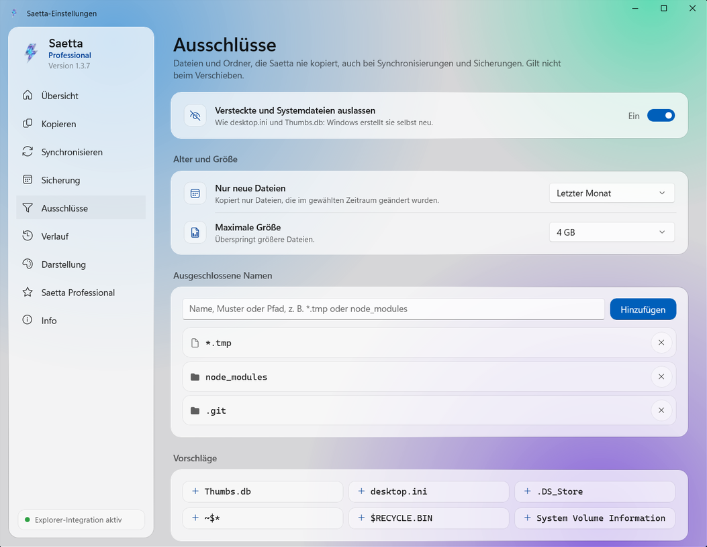

Kopieren, verschieben, löschen.So schnell wie Ihr Laufwerk.
Saetta ist das Kopierprogramm für Windows, das im Datei-Explorer arbeitet: Es kopiert Tausende Dateien bis zu 25-mal schneller, prüft, ob jede Kopie mit dem Original identisch ist, und bleibt bei einer gesperrten Datei nicht stehen.
Saetta ersetzt das Kopieren von Windows bei den Vorgängen, bei denen es langsam ist. An Ihrer Arbeitsweise ändert sich nichts: Sie wählen die Dateien im Datei-Explorer aus, kopieren sie und fügen sie ein, wie immer. Den Rest erledigt eine von Grund auf neu geschriebene Kopier-Engine.
Schnell
Mit einer eigenen Kopier-Engine optimiert Saetta jede Übertragung und passt sich den physischen Eigenschaften von SSDs, Festplatten, USB-Laufwerken und SD-Karten an.
Zuverlässig
Ist eine Datei gesperrt, hält Saetta nicht an: Es versucht es erneut, erledigt den Rest der Warteschlange und zeigt Ihnen am Ende genau, welche Dateien nicht übertragen wurden.
Geprüft
Jede kopierte Datei wird erneut vom Datenträger gelesen und mit dem Original verglichen, damit ihre Integrität gewährleistet ist.
Was macht Saetta?
Die wichtigsten Funktionen im Einzelnen.
Ultraschnelle Kopien
Der Datei-Explorer kopiert eine Datei nach der anderen. Saetta kann Dateien parallel kopieren und wählt die Vorgehensweise passend zum Datenträger.
24,7×schneller als der Datei-Explorer bei 20.000 kleinen Dateien: 7,7 Sekunden statt 3 Minuten und 11 Sekunden.
Saetta erscheint im Kontextmenü von Windows. Wenn Sie die Integration aktivieren, starten auch Strg+V, das Ziehen von Dateien und Entf Saetta.
Kopieren, Ausschneiden, Einfügen und Löschen
Kopieren nach… und Verschieben nach…, auch in mehrere Ordner gleichzeitig
In geschützten Ordnern erscheint nur die Abfrage von Windows
Geprüft, Datei für Datei
Nach dem Kopieren liest Saetta jede Datei erneut vom Datenträger, berechnet mit eigens dafür vorgesehenen Algorithmen ihren Fingerabdruck und vergleicht ihn mit dem des Originals. Weicht auch nur ein Byte ab, wird die Datei gemeldet.
So funktioniert die Prüfung
OriginalBericht.docxxxHash3 · 9F2C 81D0 E41A
=
KopieBericht.docxxxHash3 · 9F2C 81D0 E41A
Identisch mit dem Original

Nur kopieren, was nötig ist
Wählen Sie genau aus, was kopiert wird, mit Filtern nach Name, Dateityp, Größe oder Datum, und schließen Sie versteckte Dateien, temporäre Dateien oder ganze Ordner automatisch aus.
Alle Funktionen
Funktionen mit dem PRO-Abzeichen erfordern eine Lizenz für Saetta Professional.
Ultraschnelles Kopieren
Kopiert Dateien und Ordner mit einer eigenen Engine, die bis zu 25-mal schneller ist als der Datei-Explorer.
Schnelle Integritätsprüfung
Prüft die Integrität jeder kopierten Datei.
Schnelles Löschen
Löscht Tausende Dateien in wenigen Sekunden mit einer eigenen Lösch-Engine.
Umgang mit Duplikaten
Wenn eine Datei bereits existiert, wählen Sie, ob Sie beide Versionen behalten, sie ersetzen oder überspringen.
Fehlerbehandlung
Eine gesperrte Datei wird mit dem Grund aufgeführt und kann einzeln erneut kopiert werden.
Ausschlüsse
Schließen Sie Dateien und Ordner nach Name, Typ, Datum oder Größe aus.
Explorer-Integration
Kopieren, verschieben und löschen Sie über das Kontextmenü des Datei-Explorers. Wenn Sie möchten, funktionieren auch Strg+V, das Ziehen von Dateien und die Entf-Taste mit Saetta.
Aktionen nach Abschluss
Nach Abschluss der Kopie kann Saetta den PC in den Energiesparmodus oder Ruhezustand versetzen oder herunterfahren.
Verlauf und Statistiken
Jeder Vorgang wird festgehalten, mit übertragener Datenmenge, Dauer und durchschnittlicher Geschwindigkeit.
Integritätsprüfung mit über 70 AlgorithmenPRO
BLAKE3, SHA-256, SHA-3, Whirlpool, CRC, TIGER und viele weitere.
Fortsetzen nach einer UnterbrechungPRO
Schaltet sich der PC während einer Kopie aus, setzt Saetta sie nach dem Wiedereinschalten fort und prüft die bereits kopierten Dateien.
SynchronisierungPRO
Halten Sie zwei Ordner auf demselben Stand, wann Sie wollen: Mit Spiegeln wird das Ziel identisch mit der Quelle, mit Nur Ergänzungen kopieren Sie neue und geänderte Dateien, ohne etwas zu löschen. Mit der Vorschau sehen Sie vorher, was kopiert und gelöscht wird.
Geplante SicherungenPRO
Täglich, wöchentlich, monatlich oder jährlich, auch wenn Saetta geschlossen ist. Ist das Laufwerk nicht angeschlossen, erhalten Sie einen Hinweis.
PrüfsummendateienPRO
Erstellen und prüfen Sie .sha256-, .md5-, .b3-, .sfv-Dateien und weitere Formate.
BerichtPRO
Erstellt am Ende jedes Auftrags einen HTML- oder CSV-Bericht mit dem Ergebnis jeder kopierten Datei.
Befehl am EndePRO
Führen Sie am Ende jedes Auftrags einen Befehl oder ein Skript aus.
Sicheres LöschenPRO
Die Dateien werden gelöscht, ohne Spuren zu hinterlassen: Kein Datenrettungsprogramm wird sie wiederfinden können.
GeschwindigkeitslimitPRO
Verlangsamt die Kopien, damit Laufwerk oder Netzwerk frei bleiben, während Sie arbeiten.
Saetta im Vergleich zum Kopieren von Windows
Wir haben drei alltägliche Vorgänge auf demselben PC und mit denselben Dateien gemessen, alle auf derselben SSD. Jeder Balken zeigt die benötigte Zeit: Je kürzer er ist, desto früher ist der Vorgang beendet.
20.000 kleine Dateien kopieren
Dateien à 64 KB, insgesamt 1,3 GB
24,7×schneller
Datei-Explorer3 min 11 s
Saetta7,7 s
Dateien pro Sekunde
105 → 2.594
Gesparte Zeit
3 min 3 s
20.000 Dateien löschen
Mit der parallelen Lösch-Engine von Saetta
4,6×schneller
Datei-Explorer13,0 s
Saetta2,8 s
Dateien pro Sekunde
1.540 → 7.143
Gesparte Zeit
10,2 s
12 GB in großen Dateien kopieren
Drei Dateien à 4 GB, etwa Filme oder Datenträgerabbilder
−11 %Zeit
Datei-Explorer7,9 s
Saetta7,0 s
Durchschnittliche Geschwindigkeit
1,64 GB/s → 1,84 GB/s
Gesparte Zeit
0,9 s
Wie viel schneller, nach Dateigröße
Dieselbe Kopie mit dem Datei-Explorer und mit Saetta, mit Dateien unterschiedlicher Größe. Unter jedem Balken die Zeiten der beiden Programme.
10.000 Dateien à 4 KBNotizen, QuellcodeDatei-Explorer 1 min 34 s · Saetta 4,1 s22,7×
20.000 Dateien à 64 KBDokumente, SymboleDatei-Explorer 3 min 11 s · Saetta 7,7 s24,7×
10.000 Dateien à 1 MBWebbilder, PDFsDatei-Explorer 1 min 46 s · Saetta 6,4 s16,5×
640 Dateien à 16 MBRAW-Fotos, MusikDatei-Explorer 15,4 s · Saetta 9,3 s1,7×
40 Dateien à 256 MBkurze VideosDatei-Explorer 6,3 s · Saetta 5,7 s1,1×
3 Dateien à 4 GBFilme, DatenträgerabbilderDatei-Explorer 7,9 s · Saetta 7,0 s1,1×
Laptop mit Intel-Core-i7-9750H-Prozessor (6 Kerne), 16 GB RAM und 2-TB-SSD Samsung 990 PRO: Quelle und Ziel auf derselben SSD, mit denselben Dateien für beide Programme. Jeder Test wurde pro Programm dreimal wiederholt: Wir zeigen den mittleren Wert. Die Zeit umfasst den Start von Saetta und das vollständige Schreiben der Daten auf das Laufwerk; beim Löschen entfernen beide Programme die Dateien endgültig, ohne Umweg über den Papierkorb. Das Rennen ist beschleunigt und behält die echten Verhältnisse der Zeiten bei.
Kostenlos starten. Auf Professional umsteigen, wenn Sie es brauchen.
Saetta Professional wird direkt in der App über den Microsoft Store aktiviert. Der Preis wird vom Microsoft Store festgelegt und kann je nach Land variieren.
Saetta
0 €Für immer
Volle Geschwindigkeit und alle Grundfunktionen, ohne Grenzen bei Dateianzahl oder Größe.
Schnelle Kopien, ohne Grenzen
Integration in den Datei-Explorer
Integritätsprüfung mit xxHash3
Schnelles Löschen
Kopieren nach… und Verschieben nach…, Ausschlüsse, Verlauf
Saetta Professional
29,99 €Einmaliger Kauf
Nur einmal, keine Verlängerung. Die Lizenz ist an Ihr Microsoft-Konto gebunden und gilt auf den PCs, auf denen Sie es verwenden.
Alle kostenlosen Funktionen, dazu:
Prüfung mit über 70 Algorithmen und Prüfsummendateien
Fortsetzen nach einer Unterbrechung
Synchronisierung und geplante Sicherungen
Bericht, Befehl am Ende, sicheres Löschen, Geschwindigkeitslimit
Nein. Saetta ist in den Datei-Explorer integriert und arbeitet mit ihm zusammen: Sie verwenden es über das Kontextmenü und, wenn Sie möchten, mit Strg+V und Entf.
Sind meine Dateien sicher?+
Ja. Brechen Sie einen Vorgang ab, werden unvollständige Dateien entfernt, und Dateien, die ersetzt werden sollen, bleiben unverändert, bis Saetta sie schreibt.
Ist Saetta Professional ein Abonnement?+
Nein. Es ist ein einmaliger Kauf, verwaltet vom Microsoft Store und an Ihr Microsoft-Konto gebunden.
Welche Windows-Versionen werden unterstützt?+
Windows 11 und Windows 10 ab Version 1809, auf 64-Bit-PCs.
Probieren Sie Saetta bei Ihrer nächsten Kopie aus.
Es ist kostenlos im Microsoft Store, und die Installation dauert nur wenige Sekunden.